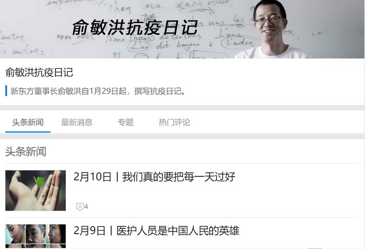
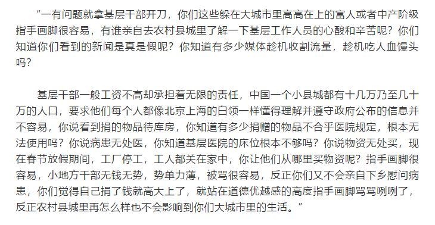

邵阳日记
原文链接 备份链接 邵阳日记 _ 小新 _ _ _ _ _ _ 我的家在湖南省邵阳市邵阳县塘田市镇，1月10日，我从广州的学校回到老家。本来准备好过一个安逸的寒假，结果突如其来的疫情让周围的一切都不再平静。 _ _ _ _ ●口罩● _ …

作者：冯超
来源：*商业人物*（ID：*****biz-leaders）*
那天晚上，新东方创始人俞敏洪和很多网友一样，等待着李文亮的消息。等到凌晨一点，太疲惫，就睡着了。早上，他看到消息后，“心一下子坠到谷底，失魂落魄，内心瞬间充满了悲愤和痛苦，一个人关在书房里，痛哭了半个小时”。
这是俞敏洪2月7日的疫情日记。去世的李文亮。救援队伍。《鲁迅全集》。“对不起，今天的日记，尽是眼泪了。”
他已经写了13篇疫情日记，每篇3000字左右，从1月29号到2月10号。这些日记，都发在他的个人公号并转发到微博上。也许等到疫情出现拐点，他才会停笔。

漫长假期里，偶然看到他的微博后，我就迷上了他的日记。
俞敏洪跟其他企业家一样，都是捐款捐物，为灾区贡献力量。疫情期间，中国的企业家们大多闷着头，没援助的没说话，正在援助的，也没多说几句话。
但俞敏洪有点特殊。
他的表达欲望很强烈，你朋友圈、微博上看到的那些匪夷所思、让人错愕愤怒的疫情热点事件，他都通过日记表达了自己的看法。
知名人物的日记，如史学家杨天石所言的，大概有两类。一类是装腔作势，隐藏真实自我，比如阎锡山的《感想日记》，满篇都是教别人做人的鸡汤。一类就是写给自己的看的，比如蒋介石的日记，他会记录自己的生理欲望，也会无所顾忌地痛骂戴季陶、李宗仁等好友同僚。
俞敏洪的日记，刨除企业产品介绍外，则是隐藏部分自我，较为克制。他自己也写道，“语言上各种斟酌，胆颤心惊”，害怕给新东方惹来麻烦，他在微信后台回复网友，自己“只是一个胆怯的说话者”。
俞敏洪在日记里推荐了一个博主拍摄的武汉视频，称其具有史料价值。其实，他的日记也有一定的历史价值。这毕竟是一个中国知名企业家的观察。
本文将对其疫情的日记进行粗略的归纳、汇编。至于他所记录之文字是否属实，感兴趣者可以看他的原文鉴注。
关于疫情
俞敏洪写道——
“如果地方政府能够高度重视，及时发布疫情提醒，那老百姓自身可能会更加警惕并自动防范，疫情就不会传播得这么迅速。另外，如果老百姓有更多的发声和反应的渠道，基层的问题能够第一时间被决策层获知，就能够提前做好全国防控，而不会造成目前几乎覆盖全国范围的疫情。”
“一个小小的病毒，在12月中旬就已经发现……不作为、不担当、粉饰太平，弄得不可收拾。不知事件过后，我们会不会从根本上进行反思，会不会进行有效的变革。”
1月31日，他谈到了湖北红十字会。
“这次疫情，像烈火真金一样，把不少官僚作风烧出了原形。搪塞、推诿、互撕、愚蠢、无能，都原形毕露。”
新东方向湖北红十字会捐款2000万元。“我们和红十字会取得了联系，对方态度挺好，会按照我们的意愿，再转捐给湖北各地最需要的医院去。希望这些钱到了医院，能够用在正道上。”
2月1日，双黄连被哄抢，他在日记写，其实3天前就有人告诉他，“上海什么研究所用双黄连治疗病毒实验成功，让我去买点双黄连，还让我千万别告诉别人。我凭着有限的科学常识觉得这个不靠谱，就没有理会。”“我们这种一夜之间的伪科学实在比较多，大家对这种背后可能有着某种不可告人的商业目的的宣传，还是冷静对待比较好。”
一人被隔离，他养的猫被活埋。“没有人情温暖的做法，实在让人不寒而栗。”
他痛恨那些隐瞒病情，导致他人被隔离的人。他觉得，这种人出现的原因是，权利不被保障后，形成两种心态，一种是好处赶紧占，一种是别人好坏与我没关系。
俞敏洪相信人性向善。网上很多感人的故事，他所在的企业家群里，很多因为疫情都受到影响，但每天讨论的都是如何支持武汉。朋友请他转发一个微博消息，那是一个女孩发的求救信息，奶奶生病，却无法住院。后来的日记里，他说他低估了人性的恶，因为有人说李文亮是沽名钓誉，得病后的表现是为得到别人的捐款，还有人骂俞敏洪是“美帝的走狗”。
5日，他写道，“今天的中国，鼓励敢说话的人出来说话，已经变得比什么都重要了”。
他对那些歌功颂德的写手发表了看法：“真正有良知的文人应该认真去关心一下普通老百姓，那些被传染了疾病的人和那些奋战在一线的医护人员，他们的处境是什么？而不是跟着领导后面，屁颠屁颠的跑。领导也许真的很辛苦，但等疫情结束了再来看功过是非似乎更好。回顾，能够让我们把事情看得更清楚。”
他批评了基层的抗疫动作变形，基层的工作人员的留言被收入日记内容。“确实，现在除了医护人员，一线基层人员最辛苦。”他后来说：“尽管他们有的时候会言行粗暴，但他们承受的压力要比我们在家里待着的人，高出好几倍。”

关于企业
新东方线下课堂停课。上百万的寒假班学生不能上课。
“如果新东方全部停课退费，新东方就只能关门大吉，七八万老师员工的生计，立刻就成了问题。”
解决方法是，搬到线上，“否则接近三十年的新东方，将会山崩地裂”。技术人员熬夜研发，几万名老师除夕晚在线培训、备课。1月30日，几十万学生开始使用线上直播系统。俞敏洪“每一个神经都紧绷着，唯恐系统崩溃掉。还好一天下来并无大碍”。
31日，新东方的服务器遭到猛烈攻击，很多学生无法上课。他写道，“我不管你是出于什么原因攻击新东方，都是不恰当的。人做事情要有底线和共识。”
有家长问他，线上上课，为何不降价格或者免费。他说，实在是做不到，教室不能开课，房租照付，教师员工工资照付，课堂搬到线上，还有昂贵的系统运营费。如果免费，“新东方基本上撑不到3个月就烟消云散了”。当然，新东方还是推出了部分免费课程，有些还是针对医护人员的孩子。
2号，他所在的微信群里，讨论最多的是企业生存问题。
“房租要继续付，工资要继续发。有些地方政府还来添乱，要求企业从3-9号员工上班或者在家里加班的话，企业要付双份工资。但没有任何权威机构来认定，因为疫情这个阶段在家里上班，算不算是休息日加班？大量的企业，账上的现金估计能够撑住两个月就不错了。连生意如此兴旺的西贝，也说最多能撑三个月。社保、个人所得税、企业所得税照收不误，银行的贷款不会因为疫情就不收利息，有的银行甚至还在催还本金。”
6号，北京出台了中小企业扶植政策。
“这些措施有的有点虚，有的需要尽快落到实处。中小企业真的已经很难了，很多企业最多熬两个月，尤其是服务业领域。新东方算是有点家底的公司，现在也有点入不敷出的紧张。幸亏我原来一直坚持现金为王的策略，使得新东方账上还有点余粮。”
10号，全国各地不少公司复工。
“确实，中国经济有点拖不起了。尤其是很多企业，要是再拖下去不复工的话，真有可能被拖垮了。网上已经传出了不少公司裁员的消息。新东方没有裁员，还是要求员工都在家里上班，不到万不得已不要去办公室坐班。尽管效率上会有一定影响，但至少会让员工感觉更加安全一点。”
关于生活
俞敏洪大部分时间都呆在家里。办公，读书，写日记。
他一边听音频，一边在家里散步。某日，他在家里走几百圈，步数达到一万步以上。
家里还有他90岁的老母亲。他偶尔会用轮椅推着母亲转圈散步。
母亲得了老年痴呆症。以前，俞敏洪给母亲零花钱后，母亲都存着不花，怕儿子成了穷光蛋。
“我现在把存款单拿出来给她看，问她这是什么，她摇摇头说不知道。看到她木然的表情，我除了心酸还是心酸。唯一能够做的就是给她多买点吃的，把她伺候好。最动人的时候，就是当她把我认出来的时候，她脸上总会浮现出慈母的温暖的微笑。”
在某个晚上，他也云喝酒，打开微信视频，朋友们隔着屏幕开始聚会。
1号晚上，半轮明月悬挂。他倒了一大碗米酒，对着月亮，一饮而尽。
“我倒了另外一碗酒，洒在地上，算是我对逝者的祭奠，愿逝者在天堂安息。现在你们不得不和家人说再见，但总有一天，我们大家都会在天堂相见。”
推荐阅读


严正声明：“商业人物”所有原创文章，转载均须获授权。一切形式非法转载，包括但不限于盗转、未获“商业人物”授权通过第三方转载行为，均属侵权行为，“商业人物”将公布“黑名单”并追究法律责任。“商业人物”只愿与尊重知识产权的机构合作。
投稿、约访、合作，联系邮箱：bizleaders@qq.com
添加微信biz-leader，获转载授权或邀您加入商友群
1.长按右侧二维码即可关注***。*
2.期待您置顶与星标。欢迎分享与评论，欢迎通过留言或私信方式给我们提供选题线索。
3.点击“阅读原文”，看商业人物官网，获取更多精彩内容。**

原文链接 备份链接 邵阳日记 _ 小新 _ _ _ _ _ _ 我的家在湖南省邵阳市邵阳县塘田市镇，1月10日，我从广州的学校回到老家。本来准备好过一个安逸的寒假，结果突如其来的疫情让周围的一切都不再平静。 _ _ _ _ ●口罩● _ …
原文链接 备份链接 《创新经济战疫指南》，是燃财经在新型肺炎疫情期间推出的特别栏目，关注创新经济企业遇到的新难题、商讨应该采取的新对策，希望能够帮助中小企业一起战胜挑战、把握机会。本文是第4期。查看前3篇请点击《哪些行业正在逆势爆 …
原文链接 备份链接 【疫情之下】是苍衣社开设的非虚构故事专栏，记录在新型冠状病毒疫情蔓延时，普通中国人的抗疫报告。 大家好，我是脸叔。 在这个特殊时期，我社开设【疫情之下】专栏，记录普通人的抗疫故事。在这一场灾难中，没有人能够置身事 …
原文链接 备份链接 每天晚上泡脚时，我跟母亲总有一件事情要做：搬来小板凳，母亲坐下，我一边泡脚一边给她捏肩。她低下头，露出脖子，我按下去时，她“呀”了一声，我问是不是力度大了，她说没事，“一天到黑窝在房里看电视，总是这里疼那里疼，要是去地 …
原文链接 备份链接 2020年1月23日，在封闭了所有离汉通道之后，武汉这座常驻人口1100万的城市彻底成为了“封闭”的孤城。 在这之后，湖北省诸多城市陆续封城，到1月26日，湖北省绝大部分城市进入了封城状态。外来的人无法回到湖北，湖北人 …